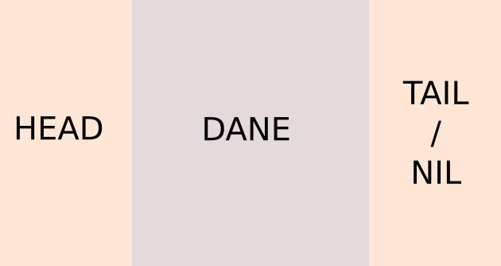
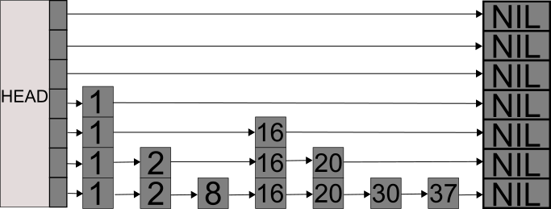
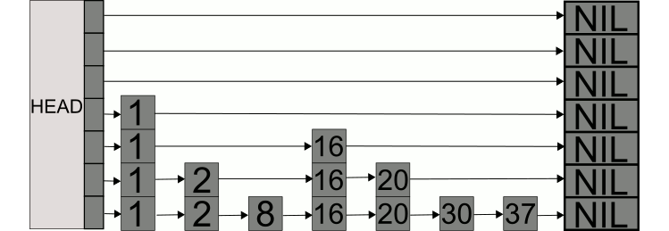
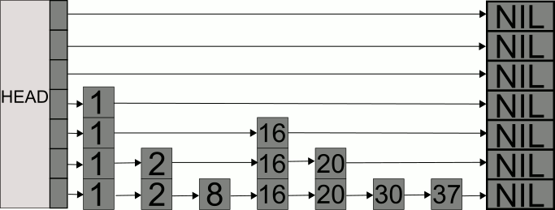

Listy z przeskokami (skip lists)
Wprowadzenie
Lista z przeskokami jest zbudowana bazując na strukturze zwykłej listy.
Tak samo mamy listę z węzłami w posortowanej kolejności wg klucza, zawierające wskaźnik do kolejnego elementu.
Znaczącą różnicą jednak jest istnienie parametru listy określającego jej maksymalną wysokość,
czyli ile może mieć warstw/poziomów (które mozna sobie wyobrazić jako zbiór list jednokierunkowych),
oraz parametru który mówi, jaką wysokość ma węzeł (tzn przez ile warstw przechodzi) gdzie wysokość ta jest mniejsza od maksymalnej wysokości listy.
Tak samo jak w liście jedno kierunkowej i dwukierunkowej mamy głowę(head) i ogon(tail), ale nie pełnią one tej samej funkcji.
Ogon i głowa pełnią tutaj bardziej funkcję kolumn, pomiędzy którymi umieszczamy kolejne węzły.
wszystkie istniejące elmenty listy bedą zawsze obecne na najniższym poziomie/warstwie.

Jescze jedną różnicą jest to, że węzeł może przechowywać tyle wskaźników ile ma wysokości.
Wysokość węzła ustalamy losowo, gdzie wartość z jakim prawdopodobnieństwem węzeł zostanie "awansowany" jest naczęściej ustalana jako 1/2, i jest stałym parametrem listy.
Można uznac to za rzut monetą, np orzeł jako awans, reszka bez awansu.
Przy dodawaniu elementu rzucamy monetą aż nie wyrzucimy reszki lub nie dojdziemy do maksymalnej wysokości, przy czym każdy orzeł oznacza awans o jeden stopień.
Poniżej przykład gotowej listy o wysokości h=7 i prawdopodobieństwie p=0,5:

Różnice wymienione powyżej powodują że oczekiwany czas wyszukiwania, usuwania oraz dodawania elementu to O(log(N))
Pesymistyczny przypadek to O(N) jak w klasycznej liście.
Dodawanie elementu
Aby dodać nowy element:
Rozpoczynamy przeszukiwanie od najwyższego poziomu.
Wyszukujemy gdzie należy umieścić nowy element przechodząć przez listę
Dodajemy element.
Losujemy jaką wysokość będzie miał nowy węzeł.
aktualizujemy wskaźniki.
Operacja dodawania nowego elementu do listy dla wylosowanej wysokości węzła h=3 w liście o wysokości h=7 i prawdopodobieństwie p=0.5:

Wyszukiwanie elementu
Aby wyszukać element:
1. Rozpoczynamy przeszukiwanie od najwyższego poziomu.
2. Przechodzimy po każdym poziomie jak po zwyczajniej liście.
3. Jeżeli trafimy na element ostatni czyli tzw NIL lub na węzęł z kluczem większym od szukanego, schodzimy poziom niżej i zaczynamy od początku listy
4. Powyższą instrukcję ponawiamy aż trafimy na element mniejszy lub na najniższy poziom listy
5. Gdy trafimy na element z mniejszą wartością klucza, sprawdzamy na co wskazuje, jeżeli wskazany element ma wartość klucza mniejszą niż szukana, przechodzimy do niego, jeżeli większą, ponownie schodzimy na niższy poziom tylko że nie na początek listy a na niszy poziom węzła,
6. następnie sprawdzamy co wskazywane jest na tym niższym poziomie.
Powtarzamy powyższe aż do znalezienia elementu lub aż do zejścia na najniższy poziom.
Operacja wyszukania elementu o kluczu '20' zakończona sukcesem:

Operacja wyszukania elementu o kluczu '35' zakończona porażką:
Usuwanie elementu
Procedura usuwania wykorzystuje kroki z procedury wyszukiwania,
Usuwanie również działa jak w przypadku zwykłej listy, z tą różnicą że musimy zaktualizować więcej wskaźników w zależności od tego, jaką wysokość miał węzęł
Operacja usuwania elementu z listy listy: